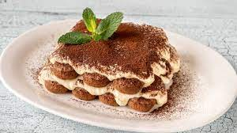

Tiramusi

Descripcion
En estedocumento repasaremos la receta de la autentica receta de la "Tiramisu de la Mamma", tipica receta italiana con los secretos mejores guardados por generaciones
Ingresientes
- 500 ml de agua
- 4 cucharadas colmadas de café granulado
- 5 cucharadas de amaretto (o a gusto)
- 1 cucharada de azúcar
- 4 yemas de huevo
- 250g de azúcar flor
- 1 queso crema
- 100g de crema de leche
- 500 ml de crema para batir muy fría
- 500g de galletas de champaña
- Cacao Dulce en Polvo Gourmet para espolvorear
Pasos a seguir:
- Hervir los 500 ml de agua.Verter sobre un bol y agregar el café.Revolver bien. Añadir el amaretto y azúcar y revolver.Reservar.
- En un bol, batir las yemas con 125g de azúcar flor, hasta que la mezcla quede uniforme y de un color amarillo claro. Reservar.
- En otro bol, batir el queso crema previamente molido con la crema de leche, hasta que quede una mezcla suave. Reservar.
- En otro bol, batir la crema para batir (recién sacada del refrigerador) e ir agregando de a poco 125g de azúcar flor, sin parar de batir. La crema tiene que quedar firme, cuidando que no se corte.
- Juntar la mezcla de las yemas con la mezcla del queso crema con movimientos envolventes, hasta que quede una mezcla homogénea. Agregar esta mezcla de a poco a la crema batida, con movimientos envolventes y cuidando que quede todo bien mezclado.